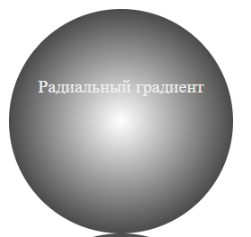
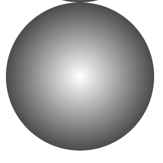

Радиальный градиент
Радиальные градиенты в отличие от линейных распространяются от центра наружу по круговой схеме. Для создания радиального градиента достаточно указать цвет, который будет в центре градиента, и цвет, который должен быть снаружи. Эти цвета передаются в функцию radial-gradient(). Например:
<!DOCTYPE html>
<html>
<head>
<meta charset="utf-8">
<title>Стилизация таблиц в CSS3</title>
<style>
div {
width: 200px;
height: 200px;
border-radius: 100px;
background-color: #eee;
background-image: radial-gradient(white, black);
background-image: -moz-radial-gradient(white, black);
background-image: -webkit-radial-gradient(white, black);
}
p{
margin: 0;
padding-top: 60px;
text-align: center;
color: #eee;
}
</style>
</head>
<body>
<div><p>Радиальный градиент</p></div>
</body>
</html>

Как и в случае с линейным градиентом здесь также надо использовать префиксы вендоров для поддержки браузерами.
Радиальный градиент может иметь две формы: круговую и эллиптическую. Эллиптическая форма представляет распространение градиента в виде эллипса и задается с помощью ключевого слова ellipse:
background-image: radial-gradient(ellipse, white, black);
Поскольку это значение для градиента по умолчанию, то оно может опускаться при использовании.
Круговая форма представляет распространение градиента в виде кругов от центра во вне. Для этого используется ключевое слово circle:
background-image: linear-gradient(bottom,black,white);
Также можно задать диагональное направление с помощью двух значений:
background-image: radial-gradient(circle, white, black);
Как правило, центр радиального градиента расположен в центре элемента, но это поведение можно переопределить, указав значение для параметра background-position:
background-image: radial-gradient(25% 30%, circle, white, black);
Числа 25% 30% означают, что центр градиента будет находиться на расстоянии в 25% от левой границы и в 30% от верхней границы элемента.

background-image: linear-gradient(top, red, #ccc, blue);
С помощью специальных дополнительных значений можно задать размер градиента:
- closest-side: градиент распространяется из центра только до ближайшей к центру стороне элемента. То есть градиент остается внутри элемента
- closest-corner: ширина градиента вычисляется по расстоянию из его центра до ближайшего угла элемента, поэтому градиент может выйти за пределы элемента.
- farthest-side: градиент распространяется из центра до самой дальней стороны элемента
- farthest-corner: ширина градиента вычисляется по расстоянию из его центра до самого дальнего угла элемента
background-image: radial-gradient(25% 30%, circle farthest-corner, white, black);